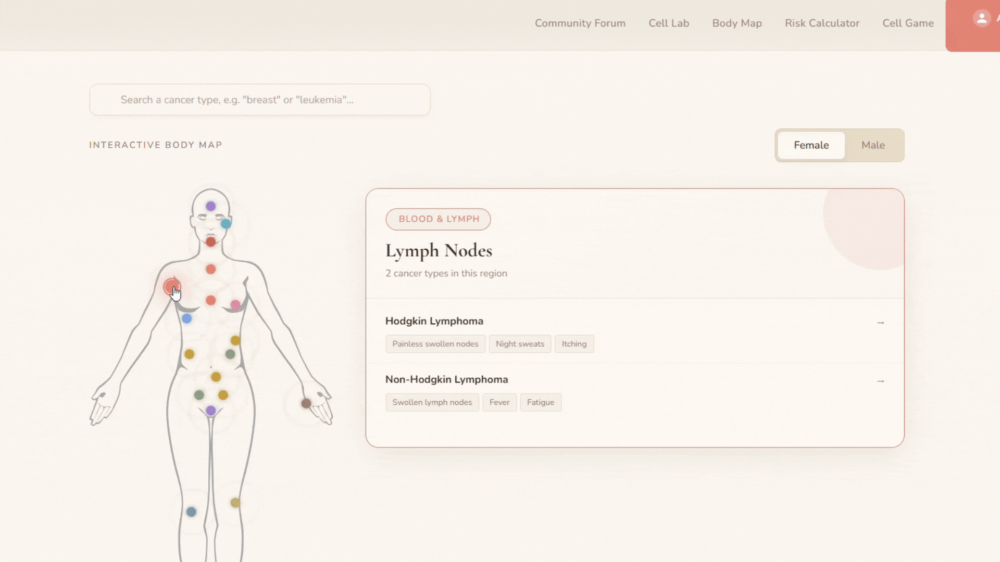
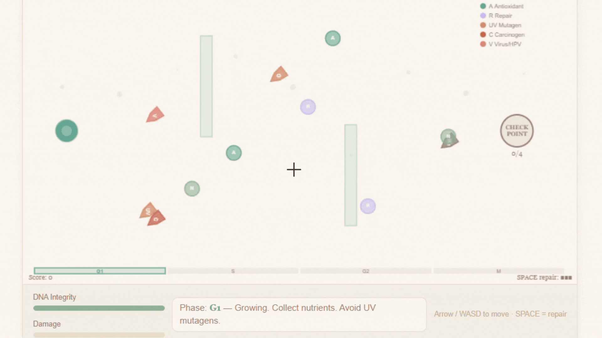
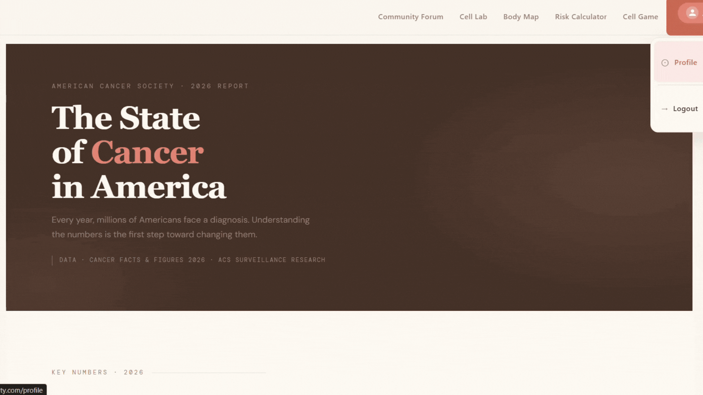
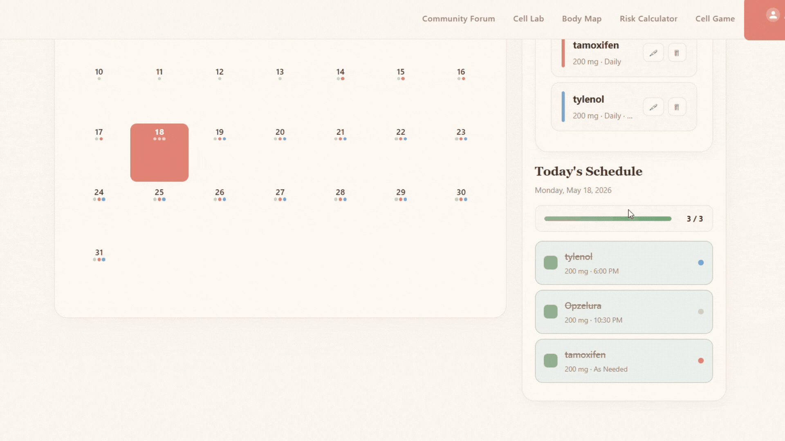
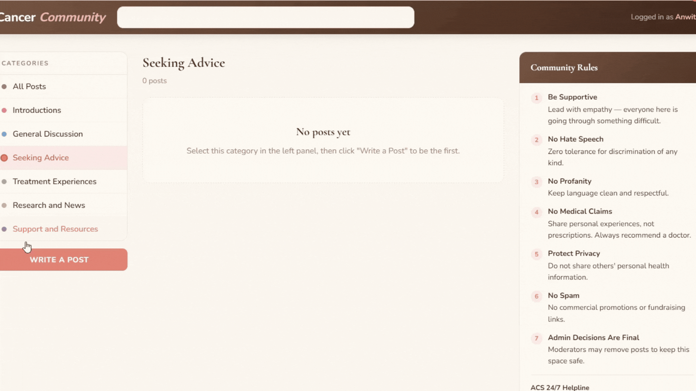

ACS Website Prototype: Feature Concepts
A collection of interactive feature concepts designed to enhance the American Cancer Society website experience through visual, engaging, and educational tools.
Replace the traditional text-heavy cancer type listings with an interactive anatomical body diagram. Users can click on any body region to instantly see all cancer types that affect that area, complete with descriptions, risk factors, and links to full information pages.
Key Benefits
- Intuitive visual navigation that mirrors how patients think about their bodies
- Faster discovery of relevant cancer information versus scrolling text lists
- Reduced cognitive load for users seeking information about specific regions
- Engaging for users of all ages and literacy levels
- Encourages exploration and learning

Users can click on any body region to explore cancer types affecting that area
An educational simulation that walks users through the cell cycle phases (G1, S, G2, M) with real-time visualization. Users can apply disruptors (UV radiation, carcinogens, heavy metals, inherited mutations) to see how DNA damage accumulates and checkpoints fail, directly visualizing how cancer develops.
Key Features
Phase-by-Phase Progression
Walk through each cell cycle checkpoint with interactive gates
DNA Damage Visualization
See damage accumulate in real-time on the DNA double helix
Gene Toggle Controls
Disable p53, Rb, RAS, and BRCA1 to understand their role in cancer
Mutation Load Meter
Visual indicator of cancer progression
Interactive Checkpoints
Answer knowledge checks to unlock each phase
Gene Deep-Dive
Advanced tabs on proto-oncogenes, oncogenes, and tumor suppressors
Educational Value
Transforms abstract molecular biology into a concrete, interactive experience that helps users understand cancer prevention and early detection at a cellular level.

Real-time visualization of cell cycle phases and checkpoint mechanisms
A machine learning powered tool that predicts a user's relative cancer risk based on their demographics, lifestyle, medical history, and environmental exposures. The model is trained on ACS Cancer Facts and Figures 2026 epidemiological data.
What Users See
- Guided questionnaire covering demographics, smoking status, BMI, diet quality, family history, and medical conditions
- Overall relative risk multiplier (e.g., 1.8 times population average)
- Per-cancer-type lifetime risk breakdown with visual gauges
- Risk factor analysis highlighting personal key drivers
- Feature importance ranking showing which factors influenced the prediction most
- Side by side comparison with population baseline
- Dual language support in English and Spanish for broader accessibility
Disclaimer
Educational tool only, not medical advice. Always recommends consulting a healthcare provider for personalized screening and prevention recommendations.

Personalized risk assessment with detailed breakdown by cancer type
A patient facing tool to log daily medications, track side effects, and monitor symptoms over time. Users can manage their treatment journey with organized, visual records.
Core Capabilities
- Add medications with dosage schedules and frequency
- Log daily adherence by marking which doses were taken
- Track symptom severity and timing over time
- View medication calendars with color coded adherence patterns
- Generate reports to bring to doctor visits
- Digital notebook for recording side effects and observations
Real World Use
Patients undergoing chemotherapy or long term hormone therapy can stay organized, track patterns, and provide detailed, accurate information to their care teams during follow up visits.

Easy medication management with daily tracking and notes
A moderated online community where patients, survivors, and caregivers can connect, share experiences, and find resources.
Forum Categories
Introductions
Introduce yourself to the community
General Discussion
Open conversation about cancer and life
Seeking Advice
Ask questions and get peer support
Treatment Experiences
Share treatment journeys and outcomes
Research and News
Discuss latest cancer research findings
Support and Resources
Links to ACS resources and support services
Moderation and Safety
- Community Rules prominently displayed to all members
- Zero tolerance for hate speech, discrimination, or spam
- Moderator team removes posts that violate guidelines
- Direct links to ACS 24/7 Helpline and Crisis Text Line
- No medical claims without professional recommendations
- Privacy protection for all member information
Purpose
Reduces isolation and anxiety, builds genuine community connection, and complements professional medical and mental health support.

Safe, moderated community space for patient and caregiver support
Future Expansion Ideas
These proof of concept features could be extended to include:
- Genomic Risk Assessment: Integration of BRCA testing and other genetic risk panels into the risk calculator
- Clinical Trial Finder: Help patients locate relevant trials based on their cancer type, stage, and location
- Survivorship Care Plans: Personalized follow up schedules and late effect monitoring tools
- Treatment Decision Support: Interactive tools comparing treatment options with outcomes
- Telehealth Integration: Direct scheduling with ACS partner oncologists and support specialists
Technology Stack
Frontend
HTML, CSS, JavaScript (vanilla and React)
Backend
Python with Flask/FastAPI frameworks
ML Model
Ensemble approach: Logistic Regression, Random Forest, Decision Tree
Visualization
Canvas based interactive graphics and SVG diagrams
Data Source
ACS Cancer Facts and Figures 2026 epidemiological data
Key Design Principles
Accessibility: All features designed to be usable by people with different abilities, literacy levels, and technical backgrounds.
Clarity: Complex medical information presented in plain language with visual aids to support understanding.
Evidence Based: All content, risk calculations, and recommendations grounded in current ACS guidelines and peer reviewed research.
Empowerment: Tools designed to give users agency and control over their health journey and learning.